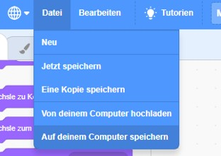

Wenn du zwischendurch deinen Programmcode speichern möchtest, dann kannst du das über das obere Menü tun.
Wähle dazu den Menüpunkt "Datei" und dort den Unterpunkt "Auf deinem Computer speichern" aus.
Dein Browser startet dann den Download einer Datei mit der Endung ".sb3". Diese Datei enthält den aktuellen Stand deines
Programmcodes.
Du kannst diesen wieder in den Editor laden, indem du im Menü "Datei" den Menüpunkt "Von deinem Computer hochladen"
verwendest.
